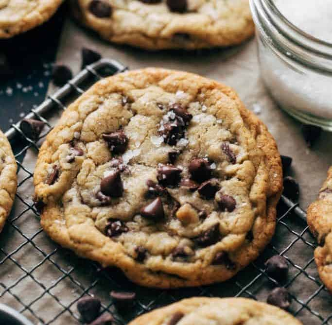

Chocolate Chip Cookies

Description
Chocolate chip cookies. What more is there to say?
All chocolate chip cookies are good chocolate chip cookies. But these are the best chocolate chip cookies. No chilling the dough? No electric mixer required? Soft on the inside, with a bit of crispiness on the outside? All aspects of the best chocolate chip cookies.
Enough talk. Let's bake!
Ingredients
- 1 1/3 cups all purpose flour, spooned and leveled (do that last part; it's actually important)
- 1/2 tsp baking soda
- 1/2 tsp baking powder
- 3/4 tsp kosher salt
- 1/2 cup unsalted butter, melted and cooled
- 1/2 cup light brown sugar, packed
- 1/3 cup granulated sugar
- 2 tsp vanilla extract
- 1 large egg
- 1 1/2 cups semisweet chocolate chips (and a few extra for topping to add more of that chocolatey goodness, if you're into that)
- Flaky sea salt
Steps
- Preheat oven to 350° and line a large cookie sheet with parchment paper.
- Whisk together the flour (properly measured, pretty please), baking soda, baking powder, and kosher salt. Great job! Now set that aside.
- Grab a little bit bigger bowl and add the butter, brown sugar, and granulated sugar. I know it's tempting to skip this step, but let your melted butter cool a bit before adding it. Hot butter = no good. Science stuff. Whisk it all together as fast as your baker hands can handle for about 1-2 minutes. When it looks like paste (yum), then you're done!
- Whisk in the egg and vanilla extract until your mixture is nice and smooth.
- Pour in the dry ingredients (the ones we set aside earlier) and fold them until combined. When you can see a few remaining streaks of flour, stop! Grab your chocolate chips (yes, you can eat a few) and pour the rest into the mixture. Get back to folding until you don't see those flour streaks anymore.
- It's important to stop folding at this point. You don't want to over mix. More science stuff.
- Scoop 5 cookies onto your cookie sheet, using either a 2oz cookie scoop or a 1/4 measuring cup. If you're feeling really adventurous (or don't have a cookie scoop or measuring cup), use whatever utensil your heart desires. Just keep in mind that the recipe typically yields 9-12 cookies, depending on size, and go from there.
- Bake the cookies for 12-15 minutes, depending on preferred done-ness. If you like gooey cookies, go 12. If you're more of a well-done cookie consumer, let them cook those few extra minutes.
- The cookies are technically ready when they have a nice golden-brown ring around the outside and are pale and puffed up in the middle. But again, this is totally dependent on personal preference (you do you).
- As soon as you pull the cookies out of the oven, sprinkle a dash of sea salt and your remaining chocolate chips over top.
- Move these cookies to a cooling rack, and repeat steps 6-9 until you run out of dough.
- It's recommended to let the cookies cool for about 20 minutes before you eat them, but I won't tell if you sneak one (or a few) when they're fresh out of the oven. That's my favorite way to eat them too.
- Optional: go full Cookie Monster and enjoy the whole batch in one sitting.
Back to Home